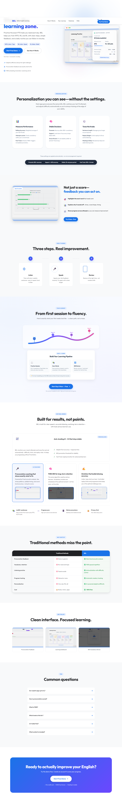
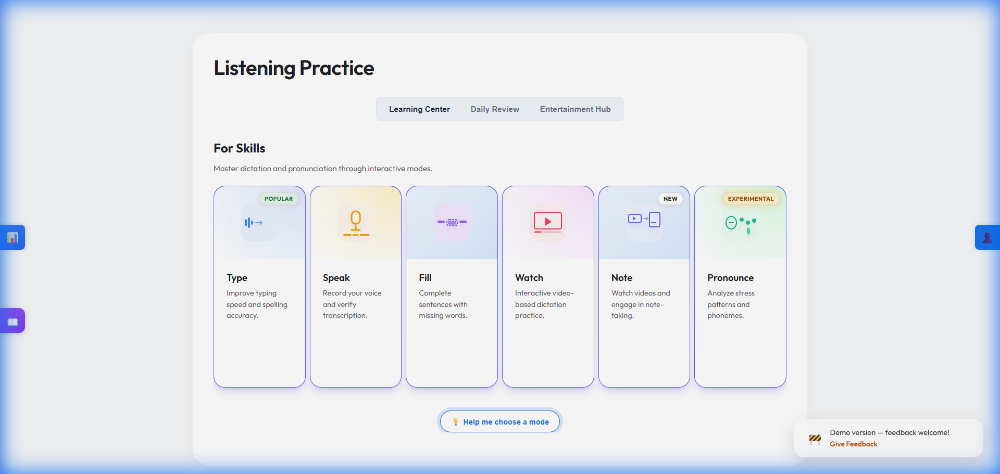
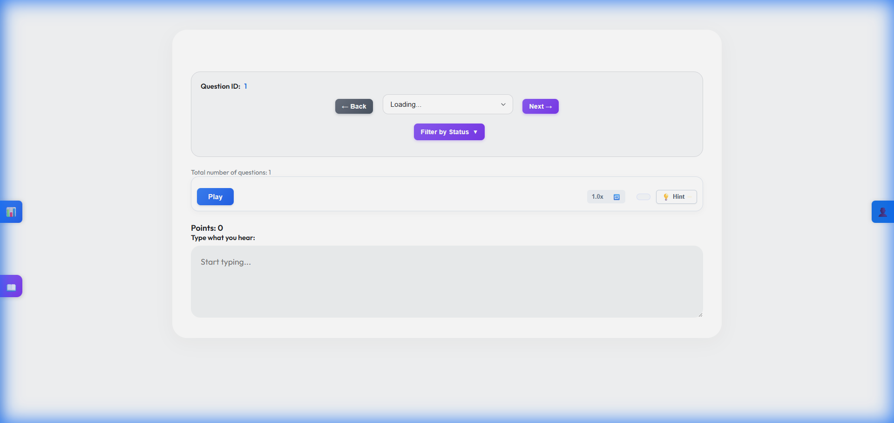
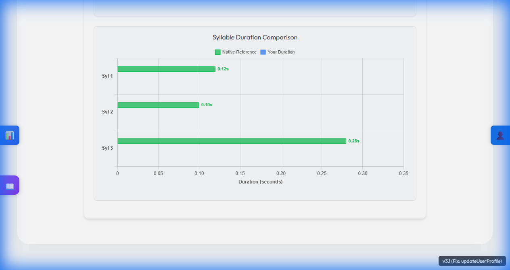
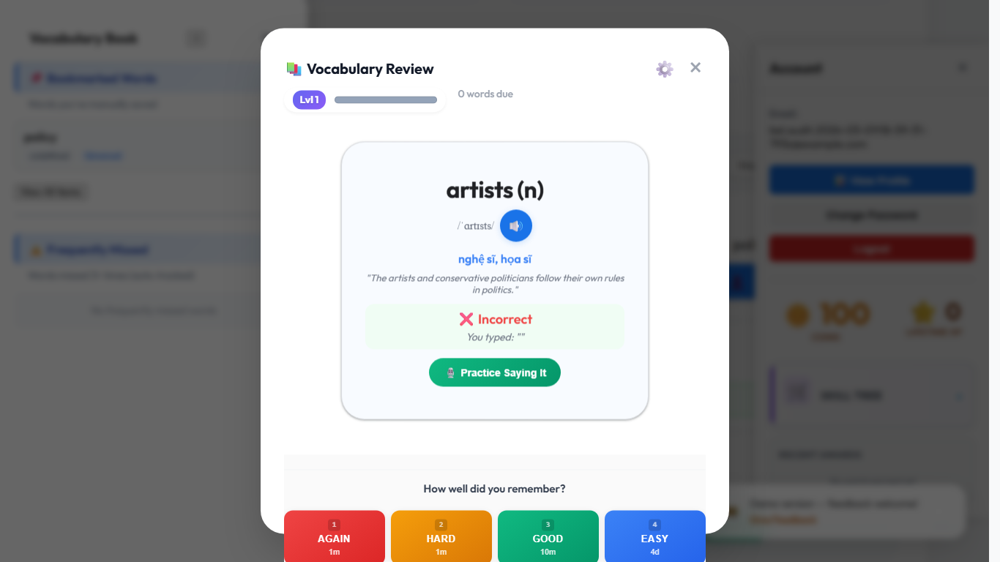
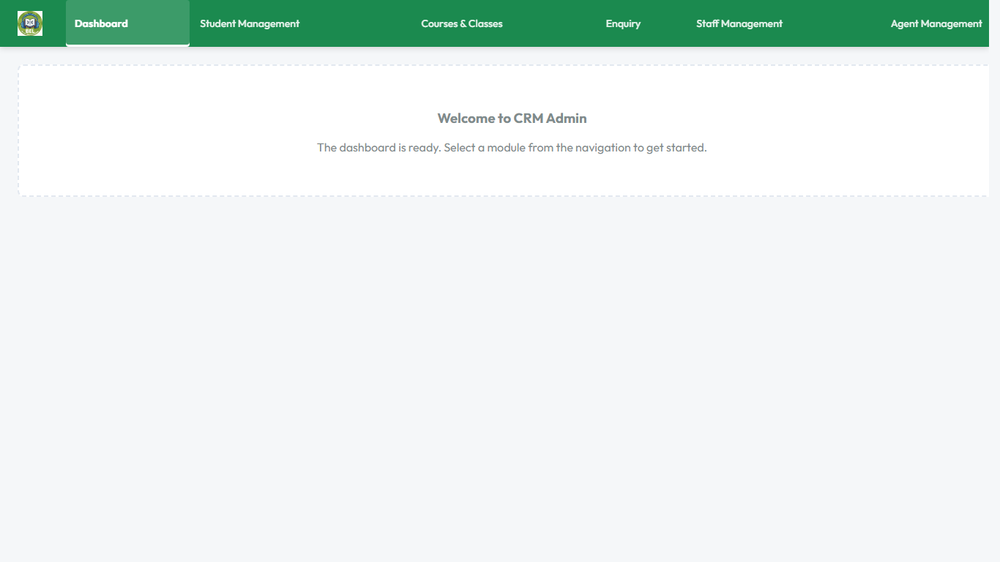

A live learner-first platform where students do more than watch and listen. They speak, type, review, and retain language through structured output.
Live product
Input to output to retention
Scale voice-led learning content
BEL / Better English Learning

Every passive learning step should become an active language production step.




Output-focused English learners, with current A2 / PTE-first positioning on the live landing flow.
Tutor network, student-facing content, and a live product demo that maps directly to real practice tasks.
Learner subscriptions and services first, with classroom workflows increasing retention and expansion value.

8+
documented learner modes plus vocabulary, SRS, pronunciation, CRM, and LMS layers
Desktop + Pixel 5
full learner and admin onboarding flows completed in audit evidence
26 tutors
with about 10 people working on the company / project
Teacher-created or AI-assisted content for listening and reading practice.
Natural narration, character voices, and scalable audio production.
Students listen, respond, speak, review vocabulary, and repeat inside the product.
BEL understands the teaching problem, the learner problem, and the production problem.
Live product
Active practice across listening, speaking, reading, writing, vocabulary, and retention loops.
Voice-led content
Narrated lessons, audiobook-style reading, richer prompts, and scalable student content.
Back BEL now
ElevenLabs support would accelerate the product's strongest content and engagement lever.
BEL already has the learning loop. ElevenLabs can help it build the voice layer that makes that loop more engaging, more immersive, and easier to scale.